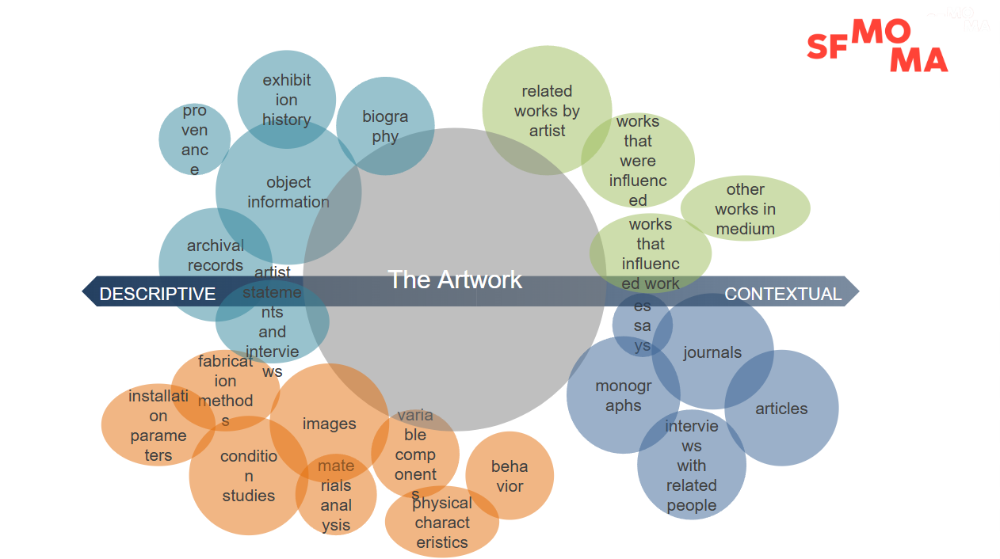

The Artwork Record

Our Goals
- Foster collaboration
- Capture knowledge from multiple voices, perspectives, and contexts
- Serve the entire museum audience
- Address the knowledge needs of all art forms, both traditional and non-traditional
- Create an experience that people will like and want to use
- Make something approachable, easy to use, and frictionless
- Use existing systems for their best purpose
- Keep artwork at the center
Agenda
- Why Media Art Records matter
- Jim Campbell: key documentation themes
- MediaWiki basics (fast)
- Art Reord template: structure & examples
- Mini‑lab: create your record
Digital Watch (1991) – Artwork Record Structure
Jim Campbell
Full record available at
mw.sfmoma.org/Digital_Watch
- 1. Overview: Basic object info and acquisition details
- 2. Curatorial Description: Interpretation and significance
- 3. Technical Narrative: How the work functions
- 4–5. History & Exhibition History: Provenance and where it’s been shown
- 6–8. Equipment, Room Requirements, Installation: Practical setup and hardware details
- 9–10. Artist Commentary & Maintenance: Artist’s notes and ongoing care
- 11. References: Citations, essays, related documentation
MediaWiki Basics (6 tools)
- VisualEditor (WYSIWYG) vs. wikitext
- Links:
[[Page name]]
- Files:
[[File:Name.jpg|thumb|caption]]
- Categories:
[[Category:Media art records]]
- Page history & diffs
- Talk pages for notes
Our House Template
This template helps us create consistent records for every artwork.
It includes standard fields (artist name, description, technical info, etc.) so that
anyone can find the same information in the same place.
Example template structure:
{| class="wikitable"
|-
| Artist Name || [[:Category:ArtistName|ArtistName]]
|-
| Artist Description || Nationality, born 19xx
|-
| Title || ''Artwork Title''
|-
| Year || 1991
|-
| Description || Short description here
|-
| Credit Line ||
|-
| Accession Number ||
|}
== Curatorial Description ==
== Technical Narrative ==
== Components ==
== Exhibitions ==
== Installation ==
== Iterations ==
== Manuals and hardware information ==
== References ==
[[Category:ArtistName]]
[[Category:Artwork]]
[[Category:YEAR]]
[[Category:Media art records]]
Copy‑Paste Record Skeleton
[[File:Example-install.jpg|thumb|right|Installation view]]
{| class="wikitable"
! Artist Name || [[:Category:ArtistName|Artist Name]]
|-
! Artist Description || Nationality, born 19xx
|-
! Title || ''Title of Work''
|-
! Year || 20xx
|-
! Description || One-paragraph summary.
|-
! Credit Line || Gift of…
|-
! Accession Number || 20xx.x
|}
== Curatorial Description ==
== Technical Narrative ==
== Components ==
== Exhibitions ==
== Installation ==
<gallery mode="packed" heights="180">
File:Install-front.jpg
File:Install-back.jpg
</gallery>
== Iterations ==
== Manuals and Hardware Information ==
== Ingest & Checksums ==
== References ==
<references/>
[[Category:Media art records]]
[[Category:Jim Campbell]]
[[Category:20XX]]
Mini‑Lab (30 min)
- Create page: Artwork:Jim Campbell/Title (Year)
- Paste the skeleton above
- Fill the table (Artist, Title, Year, Credit, Accession)
- Add at least two images to the gallery
- Write Curatorial Description (4–6 sentences)
- Add Categories: Media art records, Jim Campbell, 20XX
- Save with a clear Edit Summary
Past Examples
- Search "Category:Media art records"
- Search "Category:Jim Campbell"
- Open 2–3 prior records; note layout and level of detail
QA Checklist
- Info table complete (artist, title, year, credit, accession)
- At least one installation photo uploaded
- Curatorial and technical sections filled
- Components and Iterations clearly listed
- Categories correct
- Edit summary used
Next Steps
- Finish draft record → curator review
- Learn to link Exhibitions and Iterations to related records
- Use Talk pages for follow‑ups and approvals
Questions?